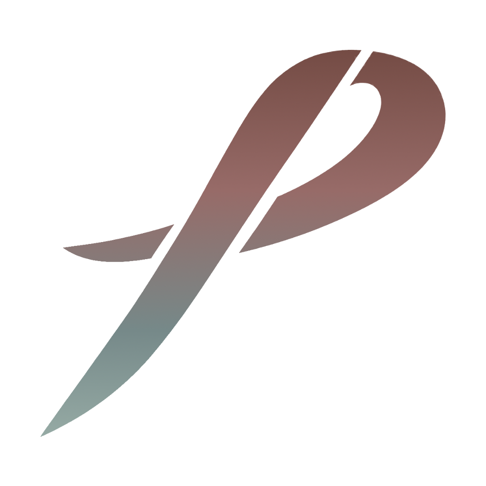

Piyaz
/
App

Piyaz
Where humans and
agents
share one understanding.
Every session picks up the full story: what shipped, what is next, and why.
Context Network
Spec / RFC
DB Migration
TASK
API Handler
Client UI
E2E Tests